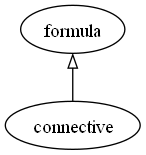

connective
Definition
A connective is a set of ordered pairs [Dow09] . Equivalently, it is a property of sets such that, for any two members of sets \(a\) and \(b\), \(aRb\) is either true or false [McAdams14] .
- Syntactically, a connective is represented with a
A connective ◆ is a formula for formula. It assigns the following meaning to its composite formula 𝜑: 𝜑 establishes a connective between its parameters. A connective ◆ has a fixed arity.
Key properties
arity
signal-proposition (TODO: rename to propositional)
symbolic-representation
Punctilious data model
